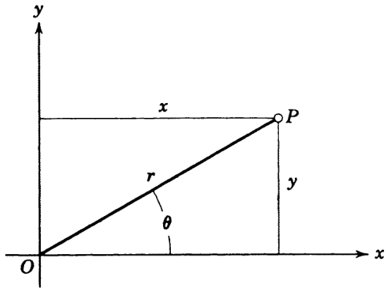

在第一章里，我们用曲线把函数表示出来。解析几何走的是相反的路：从曲线出发，用函数表示它，例如把曲线上点的一个坐标表示成另一个坐标的函数。从这个角度看，除了先前一直使用的直角坐标，自然还要考虑别的坐标系。对某些由几何条件给出的曲线，其他坐标也许更适用。其中最重要的例子就是极坐标r,θ。点 P 的极坐标与直角坐标 x,y 由下列方程联系起来：
x=rcosθ,y=rsinθ,r2=x2+y2,tanθ=xy.
图 1.S.2 表明了这些式子的几何意义。¹

图 1.S.2 极坐标。
原注 1（第 102 页） 点 P 并不能完全确定极坐标。除 θ 外，θ±2π,θ±4π,… 中任何一个角都可以作为 P 的极角。